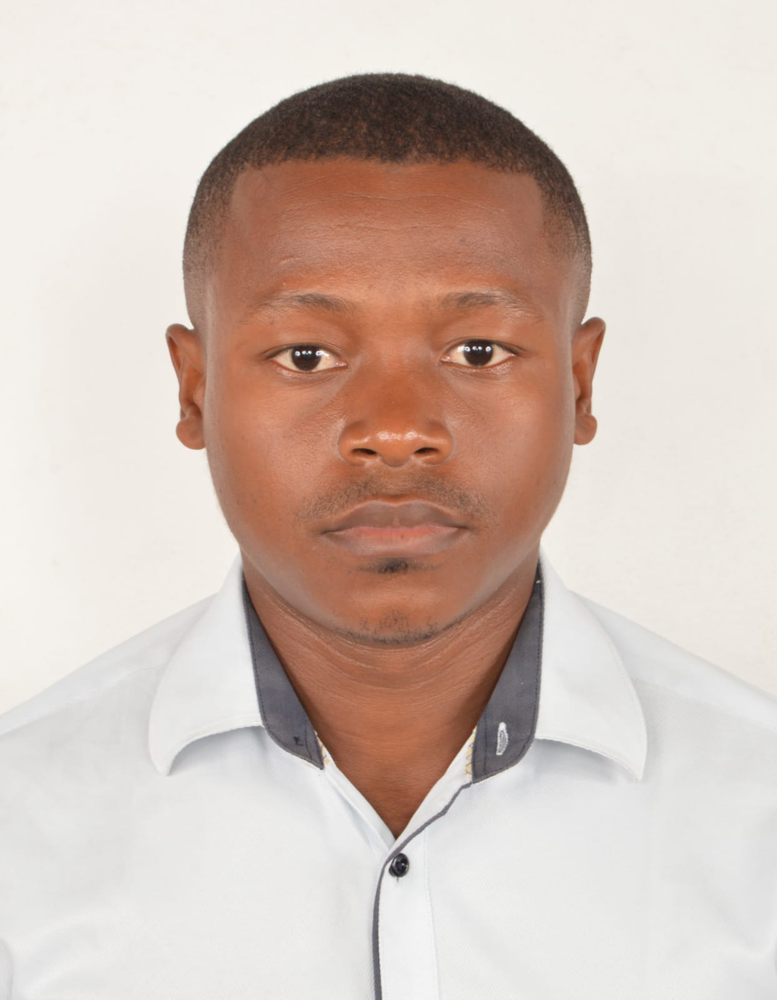

Who I Am
Joseph John Rakotonandrasana — Bachelor in Biochemistry & Environmental Science. I focus on water quality, nutrition innovation and community mobilization. I have worked with Red Cross Madagascar and Transparency International Initiative Madagascar.
My Mission
Design sustainable, local solutions that enhance public health and build community resilience.
Environmental Science
Specialized in water quality and sustainable solutions
Nutrition Innovation
Developing local health-focused initiatives
Community Leader
Mobilizing communities for positive change
Professional Journey
Red Cross Madagascar
Contributed to community health and disaster response initiatives, focusing on water safety and public health education.
Transparency International Initiative Madagascar
Worked on governance and transparency projects, promoting accountability in public health sectors.
Bachelor in Biochemistry & Environmental Science
Developed expertise in water quality analysis, nutrition science, and sustainable environmental practices.